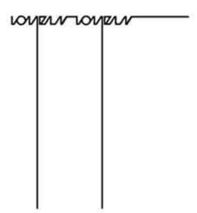

Trade Mark Journal No.2025/025 20 June 2025
UK00004197338 30 April 2025 (3,4,14,16,18,20,25,35)

- Class 3
- Aromatherapy preparations; bath salts; non-medicated bath salts; essential oils for fragrancing; essential oils; perfumery and fragrances; hand cream; cosmetics; breath freshening sprays; room perfume sprays.
- Class 4
- Candle wax; candles; scented candles; tealight candles; Christmas tree candles; wicks for candles; candles for lighting; aromatherapy fragrance candles.
- Class 14
- Jewelry boxes; trinkets [jewelry]; chains [jewelry]; rings [jewelry]; bracelets [jewelry]; women's jewelry; jewelry, including imitation jewellery and plastic jewellery; diamond jewelry.
- Class 16
- Paper; paper towels; decorations of paper for foodstuffs; gift vouchers; gift cards; paper gift tags; brochures; greeting cards; printed publications; lithographic works of art; printed photographs; cardboard gift boxes; wrapping paper; paper gift bags; stationery; pens [office requisites]; sticky tape.
- Class 18
- Leather for furniture; imitation leather; trimmings of leather for furniture; furniture coverings of leather; travel luggage; suitcases; travel bags; hand bags; back packs; shoulder bags; wallets; credit card holders.
- Class 20
- Cushions; shelves [furniture]; flower stands; showcases [furniture]; mirrors; works of art made of wood, wax, plaster or plastic; foodstuffs (Decorations of plastic for -); neck pillows; inflatable pillows [other than for medical use] for fitting around the neck.
- Class 25
- Clothing; tops; baby clothes; swimsuits; waterproof clothing; masquerade costumes; women’s shoes; leather shoes; sandals; sneakers; shoes; caps; hats; gloves [clothing]; shawls.
- Class 35
- Provision of space on websites for advertising goods and services; online advertising on computer networks; presentation of goods on communication media, for retail purposes; advertising; providing business management and operational assistance to commercial businesses; providing commercial directory information via the Internet; providing commercial information and advice for consumers in the choice of products and services; marketing in the framework of software publishing; marketing; import and export agency services; retail services, including online, relating to aromatherapy preparations, bath salts, essential oils, perfumery, fragrances, hand cream, cosmetics, breath freshening sprays, room perfume sprays, candle wax, candles, wicks for candles, jewelry boxes, jewellery, paper, paper towels, decorations of paper for foodstuffs, gift vouchers, gift cards, paper gift tags, brochures, greeting cards, printed publications, lithographic works of art, printed photographs, cardboard gift boxes, wrapping paper, paper gift bags, stationery, pens [office requisites], sticky tape, leather for furniture, imitation leather, trimmings of leather for furniture, furniture coverings of leather, travel luggage, suitcases, travel bags, hand bags, back packs, shoulder bags, wallets, credit card holders, cushions, shelves [furniture], flower stands, cutlery trays, showcases [furniture], mirrors, works of art made of wood, wax, plaster or plastic, decorations of plastic for foodstuffs, pillows, clothing, footwear and headwear.
KAT YUSEN QIU
Representative: MW Trade Marks Limited